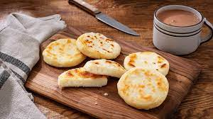

Arepas

Description:
Arepas are cornmeal cakes that hail from South America. Often they are eaten with cheese and/or hot chocolate. Simple and easy to make, this recipe covers how to make Colombian arepas.
Ingredients:
- 1 cup pre-cooked white or yellow arepa flour or cornmeal
- 1 cup warm water
- 1/3 cup white or mozzarella cheese (grated)
- 2 Tbs butter
- 1 pinch of salt
Steps:
- Combine the cornmeal, warm water, cheese, 1 tbsp butter and salt, mixing thoroughly. Let mixture stand for five minutes.
- Knead with your hands for about 3 minutes moistening your hands with water as you work.
- Form 4 small balls with the dough. Place each ball between 2 plastic bags and with a flat pot cover flatten to ½ inch.
- Add the butter to a nonstick pan over medium heat. Place the arepas in the pan, and cook about 3 minutes on each side, until a crust forms or they are golden brown.
Credit:
https://www.mycolombianrecipes.com/cheese-cornmeal-patties-arepas-de-queso/